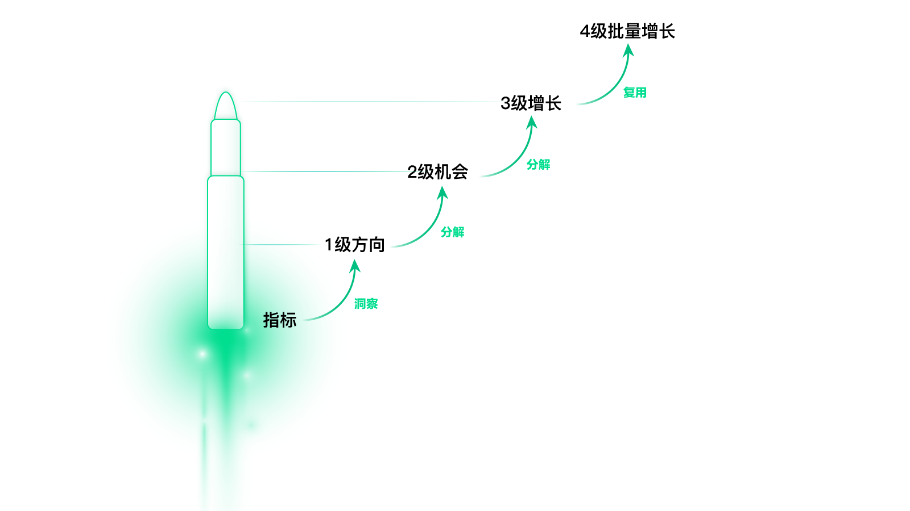
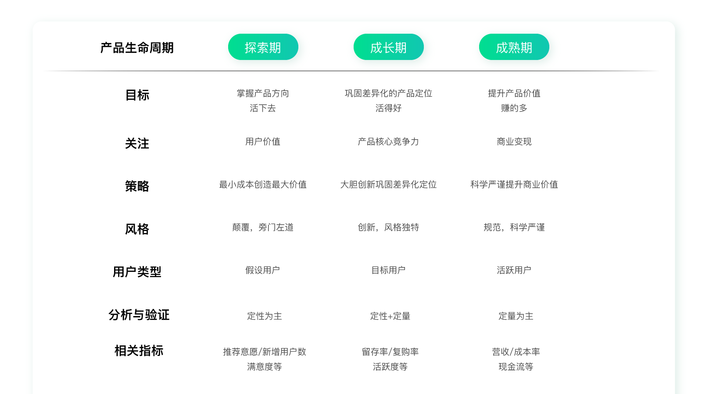
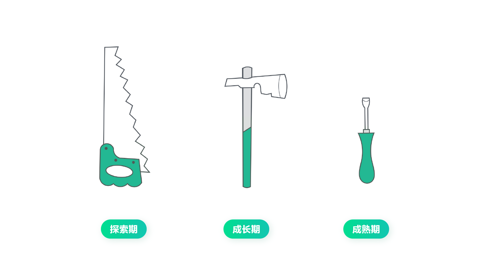
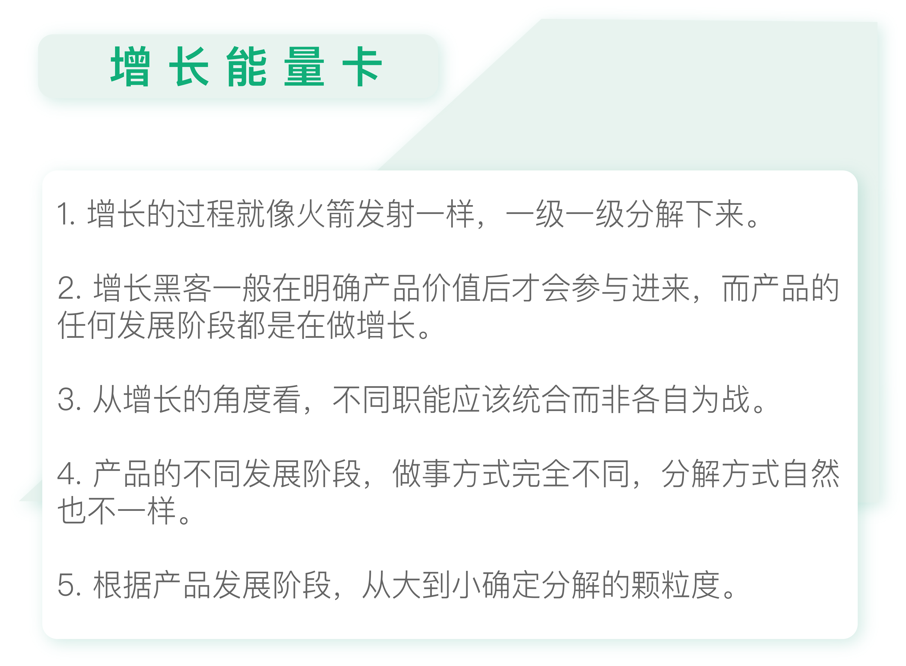

- 00 开篇词 人人都是增长官.md.html
- 01 预习 增长小白如何“弯道超车”？.md.html
- 02 预习 如何理解“增长”？.md.html
- 03 预习 不同职能如何做好增长？.md.html
- 04 预习 做增长如何处理职能间的矛盾？.md.html
- 05 正确目标找不对，天天加班也枉然.md.html
- 06 活学活用北极星指标.md.html
- 07 OKR如何助力增长？.md.html
- 08 不懂用户调研？那就对了！.md.html
- 09 调研目标：在差异性洞察中找到爆破点.md.html
- 10 数据分析：在“花式对比”中发现玄机.md.html
- 11 用户分类：围绕北极星指标细分人群.md.html
- 12 用户访谈：像侦探一样寻找破案线索（上）.md.html
- 13 用户访谈：像侦探一样寻找破案线索（下）.md.html
- 14 提炼用户差异，发现增长契机.md.html
- 15 挖掘产品优势，打破增长瓶颈.md.html
- 16 定位营销差异，抢占用户心智.md.html
- 17 一级方向：找到增长爆破点.md.html
- 18 B端产品如何调研？.md.html
- 19 全局规划增长机会.md.html
- 20 统筹全局的用户增长地图.md.html
- 21 案例解析：定义关键增长指标.md.html
- 22 正负双向洞察，找准切入点.md.html
- 23 二级机会：制定增长策略.md.html
- 24 为一家濒临破产的公司制定增长策略（上）.md.html
- 25 为一家濒临破产的公司制定增长策略（中）.md.html
- 26 为一家濒临破产的公司制定增长策略（下）.md.html
- 27 为什么指标数据怎么优化都不提升？.md.html
- 28 案例解析：打造增长闭环（上）.md.html
- 29 案例解析：打造增长闭环（下）.md.html
- 30 案例解析：唤醒沉睡用户（上）.md.html
- 31 案例解析：唤醒沉睡用户（下）.md.html
- 32 没有分解，就无缘增长.md.html
- 33 四个要点颠覆传统需求文档.md.html
- 34 三级落地：无限场景应用.md.html
- 35 手把手教你设计一次成功的实验（上）.md.html
- 36 手把手教你设计一次成功的实验（下）.md.html
- 37 积少可成多，别针换别墅.md.html
- 38 四级延续：增长组件库案例.md.html
- 39 以用户为中心增长.md.html
- 增长导航图 增长专栏的知识架构是怎样的？.md.html
- 尾声 结束意味着新的开始.md.html
- 预习答疑 你需要一张思维导图吗？.md.html
- 捐赠
32 没有分解，就无缘增长
你好，我是刘津。
通过前几讲的案例，我想你已经对精益闭环的理念和实战有较深的理解了。
精益闭环里的四步：指标、假设、分解、实验，其实和前面的内容息息相关。比如“指标”对应的是北极星指标分解下来的指标，北极星指标是我们第一模块的内容；“假设”要通过洞察提出，这在第二模块、第三模块花了大量的篇幅重点讲解。最后的“实验”我们将在下一个模块重点学习。
很显然，在第四模块里，“分解”是我们非常重要的内容。你发现这个有趣的规律了吗？
分解的宏观意义
分解就好像火箭发射一样，一级一级地解体。
最开始是指标，然后围绕指标、通过洞察得到一级假设（一级方向）；再用同样的指标、洞察、假设的思路分解一级假设得到二级假设（二级机会）；然后再用指标、洞察、假设、分解、实验的思路，分解二级假设落地三级增长；接下来沉淀实验的成果，不断复用、延展，带来四级批量增长。

可以说整个增长过程的核心，就是分解。确定目标，也就是未来想要达成的方向，然后从一级分解到二级、再到三级、再到四级……直至增长落地并不断持续下去。这就是宏观的分解。
分解的微观意义
关于一级和二级的分解，我们前面已经阐述过很多了，这里就不再赘述了。现在我们重点讲讲三级的分解。
很多人问我，精益闭环里的分解具体应该怎么分，如何决定分解的颗粒度。其实这是一个很大的话题。就前面几个案例，你可以发现分解的程度都不一样，有的分的比较粗，有的分的非常细，那么这是由什么决定的呢？
产品生命周期
想要知道这个答案，我们就不得不从产品生命周期说起了。假设，我们把产品的成长过程分为四个阶段：探索期、成长期、成熟期、二次探索期。
- 探索期：从0到1摸索方向的阶段；
- 成长期：方向稳定后的快速扩张阶段；
- 成熟期：用户体量十分庞大、增长放缓阶段；
- 二次探索期：成熟期之后的新的方向探索，好继续带来指数级的增长。
这和增长黑客倡导的企业发展要经历的四个阶段：PSF、PMF、CPF、EMF本质上是一样的。在这里我简单地解释一下。
PSF（Problem-Solution Fit）阶段：问题和解决方案阶段。这是一个从0到1的提出价值假设的阶段。在这个阶段，更多的是发现市场上的问题，然后做方案去解决问题，看与市场需求是否匹配。这相当于刚才说的探索期。
PMF（Product-Market Fit）阶段：产品和市场匹配阶段。这是一个从1到N的提出增长假设的阶段。在这个阶段，需要吸引更多的用户进来，来验证PSF阶段的想法是否具有更大的市场空间。这相当于成长期。
CPF（Channel-Product Fit）阶段：渠道与产品匹配阶段。通过精细化运营、数据分析、数据驱动调整各种营销渠道、营销方式和产品之间的适配性，大幅提升增长效率。这相当于成熟期。
EMF（Enterprise-Market Fit）阶段：企业与市场匹配阶段。思考在下一个阶段整个公司如何和市场进行下一次匹配。也就是如何通过创新寻找下一个增长点，这可能需要CEO进行各种各种的战略布局。这相当于二次探索期。
还记得我之前提过的Karmaloop的案例吗？创始人格雷格解决的就是探索期和成长期的问题，之后的CMO德鲁解决的则是成熟期的问题。一般来说，增长黑客要到PMF阶段以后才会参与进来，他们认为好的产品才是增长的根本。
所以，千万不要把增长黑客和增长混淆起来，很多人其实是分不清楚这两者的，以为增长=增长黑客=营销裂变，或者以为增长就是各种“术”的操作，这是非常狭隘的理解。
企业发展要经历的这四个阶段都属于增长的范畴，因为增长不仅仅是数字的提升，增长代表了价值。
另外我们也可以发现，这四个阶段和产品生命周期的四个阶段本质上并无区别，是完全可以一一对应上的。那为什么行业内还会出现各种各样的概念呢？这是因为产品生命周期的概念是从产品的角度提出的，而企业发展要经历的那套字母阶段是增长黑客从营销的角度提出的。角度不同，概念自然也就不同了。
我在写《破茧成蝶2》的时候就发现，产品和设计上的各种概念其实完全可以统合起来，“以用户为中心”和“以产品为中心”其实没有任何区别。因为你可以理解为“做产品即做用户”，做设计本质上也是服务用户。
而现在，产品和运营的概念也一样可以统合起来。因为无论是做产品，还是做营销，本质都是在做增长，即提升产品价值。所以无论是产品、运营、设计、技术，还是其它职位，大家都是在为同样的目标努力，不一定非要从自己职能的专业角度出发创造“专属”概念。
很多人问我做增长具体需要学什么课程，其实你不管学习什么课程，都少不了各种概念和名词，因为目前大家还会本能的受限于各种职能角度。如果维度不够高，难免陷入到眼花缭乱的概念里。但是如果你理解了本质的东西，再看各种概念，就很容易融会贯通了。藏在各种概念外壳中的真理，往往无比简单而纯粹。
增长本身就是要打通职能角度，综合地看问题。它既不是产品、也不是运营，我们在学习时一定要注意打破“本能”的思维限制。
确定分解的颗粒度
既然产品的发展阶段可以统合起来，那这里我们就统一用探索期、成长期、成熟期、二次探索期来解释吧。
为什么要分成四个阶段呢？因为不同阶段的目的不同、关注点不同，对应的策略、工作方式、相关指标等都是不一样的。比如探索期需要颠覆性创新，成长期需要大胆创新，成熟期需要规范、科学严谨。这就解释了为什么Karmaloop的创始人格雷格能创办一家有趣的公司，却无法带领它走向辉煌。创新不能墨守成规，但运营可是需要精细化操作的。

至于分解，也是类似的：探索期的分解是要保留最核心的功能及特质，看它是否能跑通，是否有人愿意使用，如果不对就立刻换方向再继续尝试；成长期的分解是在此基础上不断增加新的功能模块，让它日臻完善；而成熟期的分解是要精雕细作。就像前面说的H5营销落地页一样，小到颜色、字号、图标样式等，我们都在不断测试。
举个简单的例子，你就明白了。假设你有一片森林，里面有数万棵树木，你需要选择其中一棵把它雕琢成理想的形象。可是这么多树木应该选哪一棵呢？一开始你需要一把大锯子，快速砍开看，如果发现不是自己想要的，就立刻换下一棵树。等你找到了理想的树木后，你需要一把斧子，快速把它劈成你想要的大体形状。接下来你需要一把小锉刀精雕细琢，直至把它雕琢成一件艺术品。

如果用错了分解的工具会怎样呢？想象一下，当最开始挑选木材时，如果你使用的是小锉刀，那么当别人已经试验过无数方向，积累了无数宝贵经验时，你还在原地踏步。但如果在该用小锉刀的时候，你使用了一把大斧子，那就会立刻前功尽弃。
这就不难解释为什么我们一开始优化营销落地页总是不能成功了，因为我们用错了工具，一上来就大刀阔斧的修改，但其实现在需要的是一把小锉刀精雕细琢。
如果你不能确定当前的阶段以及应该如何分解，那就“从大到小”去探索，这样是效率最高的。也就是先用锯子，效果不好换成斧子，效果还不好就换成小锉刀。这样就能让我们快速找到合适的分解颗粒度，从而落地增长。

思考题
对于你现在正在负责的产品，你认为它处于什么阶段，应该如何分解？
欢迎把你的思考和疑问通过留言分享出来，与我和其他同学一起讨论。如果你觉得有所收获，也欢迎把文章分享给你的朋友。
© 2019 - 2023 Liangliang Lee. Powered by gin and hexo-theme-book.